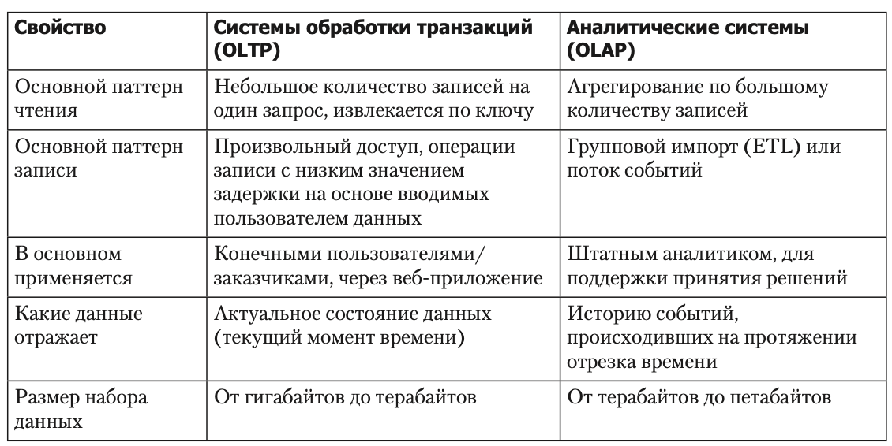

..
⭐ Star Schema
Паттерны доступа к данным
OLTP (online transaction processing) - про сбор данных и поддержание их состояния
OLAP (online analytical processing) - про обработку собранных данных

Как устроены БД для аналитики?
Star shema = таблица фактов + таблицы измерений

Почему “звезда”? Потому что при визуализации связей таблиц таблица фактов находится посередине, окруженная таблицами измерений, а связи с этими таблицами напоминают лучи звезды.
❄️ Схема снежинки - когда в таблицах измерений есть дальнейшее разбиение на подизмерения (но классик звезды удобнее как никак)